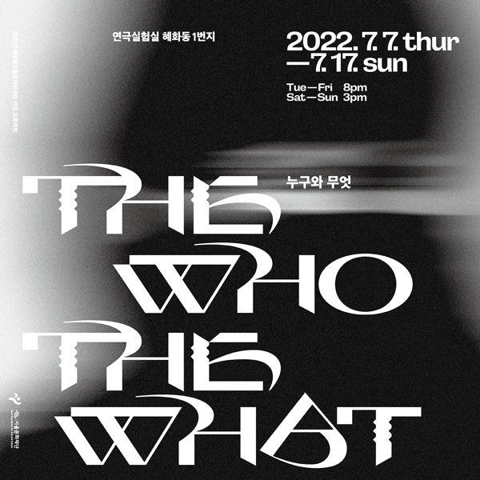

아야드 악타르 원작, 김현지 번역, 박현지 연출

자리나는 몇 년째 이슬람과 여성에 관한 소설을 쓰고 있다. 애틀랜타에서 큰 택시 회사를 운영하는 아버지 아프잘은 큰딸 사진을 무슬림 데이트 사이트에 올려 몰래 사윗감을 찾고, 개종한 백인 무슬림 엘리가 자리나를 만나러 온다. 1년 뒤 자리나는 히잡의 기원을 다룬 소설을 완성하고, 원고를 읽은 가족들은 그동안 믿고 따랐던 교리와 가치를 다시 생각하게 된다. 셰익스피어 〈말괄량이 길들이기〉의 인물 구도를 빌린 희극.
2022.7.7–17 / 연극실험실 혜화동1번지
2023.3.16–31 〈누구와 무엇 The Who & The What〉 / 국립정동극장 세실 - 창작 ing_Choice on
원작: 에이야드 악타
번역·드라마터그: 김현지
연출: 박현지
조연출: 정유진
무대: 김혜림
조명: 김소현
의상: 신은혜
분장: 남혜연
음악: 박고은
비주얼아트디렉터: 파이카
출연(2023): 조은원(자리나), 이승민(엘리), 정연종(아프잘), 박수빈(마위시)
이전: 〈꽃피는 정거장-흔적〉 | 다음: 〈홈스윗홈2-버려진 아이들〉
아카이브로 돌아가기
최종 수정 2026.11.9